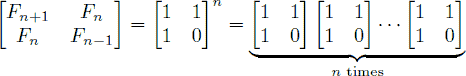
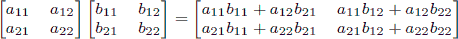
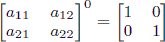

Home Page
F.A.Qs
Statistical Charts
Past Contests
Scheduled Contests
Award Contest
| Online Judge | Problem Set | Authors | Online Contests | User | ||||||
|---|---|---|---|---|---|---|---|---|---|---|
| Web Board Home Page F.A.Qs Statistical Charts | Current Contest Past Contests Scheduled Contests Award Contest | |||||||||
|
Language: Fibonacci
Description In the Fibonacci integer sequence, F0 = 0, F1 = 1, and Fn = Fn − 1 + Fn − 2 for n ≥ 2. For example, the first ten terms of the Fibonacci sequence are: 0, 1, 1, 2, 3, 5, 8, 13, 21, 34, … An alternative formula for the Fibonacci sequence is . Given an integer n, your goal is to compute the last 4 digits of Fn. Input The input test file will contain multiple test cases. Each test case consists of a single line containing n (where 0 ≤ n ≤ 1,000,000,000). The end-of-file is denoted by a single line containing the number −1. Output For each test case, print the last four digits of Fn. If the last four digits of Fn are all zeros, print ‘0’; otherwise, omit any leading zeros (i.e., print Fn mod 10000). Sample Input 0 9 999999999 1000000000 -1 Sample Output 0 34 626 6875 Hint As a reminder, matrix multiplication is associative, and the product of two 2 × 2 matrices is given by . Also, note that raising any 2 × 2 matrix to the 0th power gives the identity matrix: . Source |
[Submit] [Go Back] [Status] [Discuss]
All Rights Reserved 2003-2013 Ying Fuchen,Xu Pengcheng,Xie Di
Any problem, Please Contact Administrator